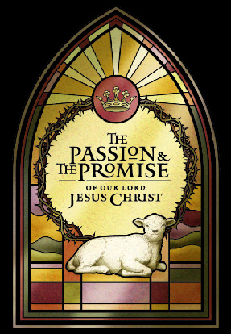

 |
Ricks College Sacred Music Series A sacred work utilizing scriptures in a
musical setting Ricks College Symphony Orchestra with Featuring soloists: Washington, D.C., area
performances combine talents with: |
|||||||||||||||||||||||||||
|
PERFORMANCES
|
||||||||||||||||||||||||||||
THE SERIES
Ricks College is proud to announce the fifth tour of the Sacred Music Series. Every other year, Ricks College commissions a significant new composition of sacred music. Traditionally performed in Utah and Idaho, this is the first opportunity to share the experience of newly commissioned work with audiences in the East.
THE WORK
This oratorio, The Passion and The Promise of Our Lord Jesus Christ, utilizes scriptures in a musical setting to portray events in the Savior's life. Beginning with His entry into Jerusalem and continuing through the crucifixion, the story extends to majestic accounts of his resurrection, his post-mortal ministries, and to Peter's powerful testimony at Pentecost. The oratorio is a serious work of art, composed for professional soloists, large chorus, and full symphony orchestra. The composer has deliberately chosen a style which is melodic, rich, colorful, appealing and approachable for general audiences. Anyone who enjoys Handel's Messiah or other choral music of most kind should find this new piece enjoyable and uplifting.
THE COMPOSER
Daniel E. Gawthrop is widely acclaimed for his musical lyricism and poetic texts. His choral works have been performed by hundreds of choirs including the American Boychoir and the Mormon Tabernacle Choir. He was previously an announcer/producer on public radio station WETA and has served as a music critic for the Washington Post.
THE ARTISTS AND DIRECTORS
This new major classical work combines the talents of 200 vocalists and 90 instrumentalists. Soloists will be Michael Belnap, Kristine Ciesinski, and Norman Bailey. Directors from Ricks College are Dr. Kevin Call, conductor and director of orchestras, and Kevin Brower, director of choral studies. The Mormon Choir of Washington, D.C., is under the direction of Gary Clawson with B. Robert Smith as president, and the Southern Virginia Chamber Choir is directed by Keith Bradshaw.
THE COLLEGE
Ricks College is located in Rexburg, Idaho, and is the largest privately-owned junior college in the United States. It was recently announced that it will become a baccalaureate-granting university to be called Brigham Young University-Idaho. The school is affiliated with The Church of Jesus Christ of Latter-day Saints. Funding for the Sacred Music Series comes from private donations with generous support from the Ricks College Endowment for the Performing and Fine Arts and the Eliza R. Snow Society for the Arts.
Back to Performance Scheduling
Back to Ricks College main page